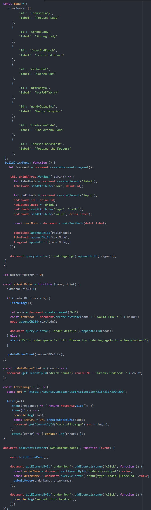
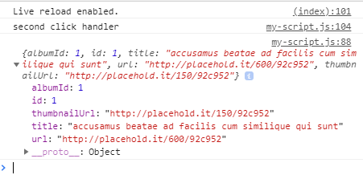
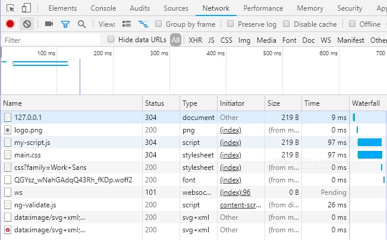
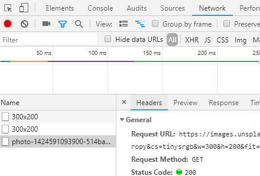

Expand this section to compare your work.
You can also compare your my-script.js file with our answer key if the image is too difficult to read.
Unless your web site is a static application, you will need to consume data from the back-end (server) via an API.
API (Application Programming Interface) - Middle-woman that allows 2 applications to talk to each other [most often being the go-between for front-end and back-end].
Static Application - Website that only allows content changes, if you make them directly in the code, manually by hand.
Dynamic Application - Website that uses a server-side language, or JavaScript & APIs, to retrieve content from other files or a database to populate the site's content. Data in the database can be updated by a Content Management System (CMS) like WordPress, or via API interaction. This dynamically updates the content, without the author or the programmer having to edit or write new code.
There are various ways to access data from an API. We're going to use JavaScript's built-in fetch method. When a user enters an order name and submits the order in our app, we'll first call JSONPlaceholder API to inspect JSON results then convert to use the Unsplash API to fetch an image randomly.
You might hear other JavaScript programmers talk about using XHR (XMLHttpRequest) or jQuery's AJAX (Asynchronous JavaScript And XML) to interact with APIs. Those were methods we had to use prior to ECMAScript 2015 (ES6). When ES6 came out, it included a native method fetch, which was similar to jQuery's AJAX but doesn't require you to add a library like jQuery to use. You can use it in pure JavaScript!
This section will help guide you through the following steps:
We will call an API using fetch and log out the json response.
Declare a new function called fetchImage in the global scope after the updateOrderCount function.
const fetchImage = () => {}; after the updateOrderCount function.
Inside the if statement in submitOrder function, add a call to fetchImage(); before creating the node.
Inside the fetchImage function, declare a new const variable called url. Assign the value to 'https://jsonplaceholder.typicode.com/photos/1'.
Let's break down the parts of the URL.
Scheme- http or https- Most APIs use https for security reasons and uses encryption under the covers.
Host- jsonplaceholder.typicode.com- This is the main domain of the URL.
Path- /photos/1- This is a unique endpoint to retrieve the resource. JSONPlaceholder also has endpoints for /users, /todos, /albums, among others.
Let's call fetch(). Inside the fetchImage function, add the following code to call fetch and log the output.
fetch(url)
.then((response) => { return response.json(); })
.then((json) => {
console.log(json);
})
.catch( (error) => { console.log(error); });
Let's walk through what we did here.
On the first line, we call fetch API built into JavaScript and pass in the url parameter we defined. The fetch API returns a Promise object.
Promises allow you to work with objects asynchronously and used for control flow, much like an if/else statement. Promises have 2 methods available: then and catch. Check out the references to read more about Promises.
When the fetch Promise resolves, we then process the Response we get by converting it to json. The output from then is another Promise. We then take the json output and log it to the console. In case of an error, we catch and log it out to the console.
ECMAScript2017 now has async and await as new ways to work with asynchronous output and works alongside Promises. We'll learn more about async and await in a future session.
In Chrome, add a drink order and take a look at the console. Do you see a JSON object? It looks like the objects we created tonight with keys and values. Feel free to inspect the object in the console.

Now let's try fetching an image and add the image to the web page.
Inside the fetchImage function, modify the url variable by assigning the value to 'https://source.unsplash.com/collection/2187331/300x200'.
The Unsplash API takes an optional parameter in the PATH for the image size. The '300x200' is the size of the image we want to retrieve. You can look at the API documentation we are using at https://source.unsplash.com.
We need to change the fetch call to handle a Blob instead of json. Update the Promise from the fetch call to look like this
fetch(url)
.then((response) => { return response.blob(); })
.then((blob) => {
console.log(blob);
})
.catch( (error) => { console.log(error); });
In DevTools, open the Network tab. In this view we see all the requests the web page made. We can see where the index.html loaded the assets such as my-script.js and main.css and the images references in the index.html such as the logo.

We can clear existing requests to make it easy to capture the network calls we're interested in. Press Clear button to clear out any existing network requests. Place a drink order and click the order button. You'll see network requests made. Click on the line that has the word "photo". You see tabs for Headers, Preview, Response, and Timing. You can click on those tabs to see different information about the request.

In Chrome, add a drink order and take a look at the console. Do you see a Blob object? Feel free to inspect the object in the console.
How does the blob object compare to json?
Inside callback for fetch, below the console.log(blob);, add the following code to connect the image url.
const imgUrl = URL.createObjectURL(blob);
document.getElementById('cocktail-image').src= imgUrl;
Woohoo! Looking good!!
Compare your my-script.js against the answer key for your work so far. It might look a little different depending on spacing.
You can also compare your my-script.js file with our answer key if the image is too difficult to read.